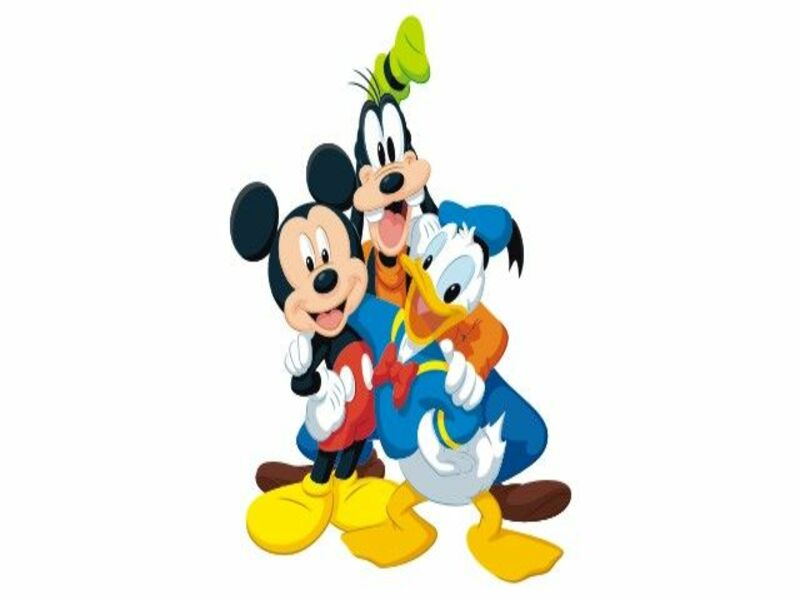
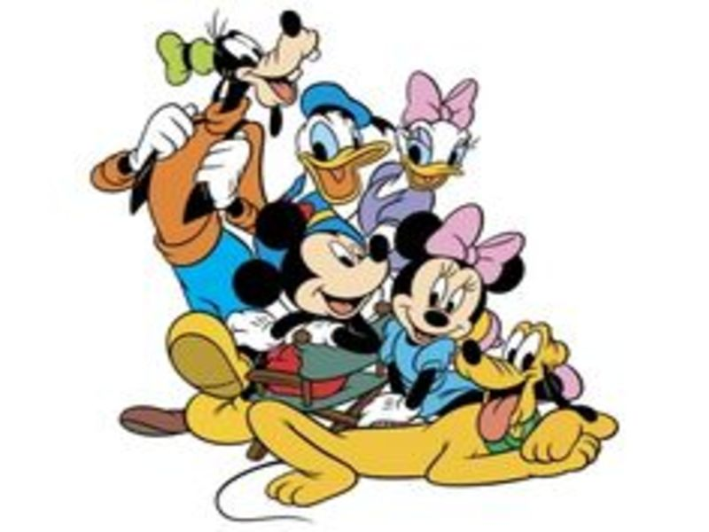
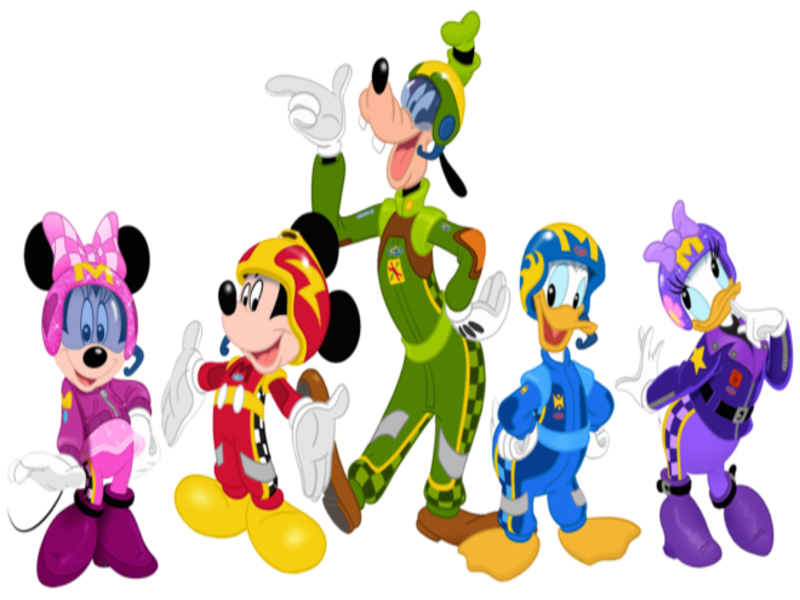
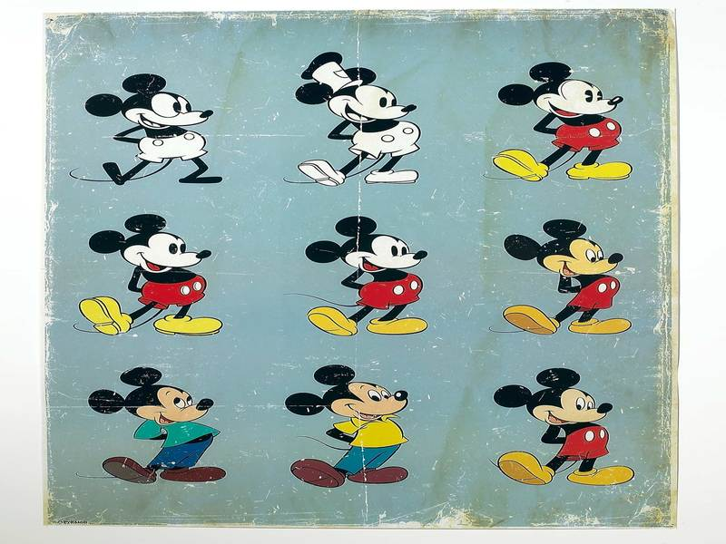
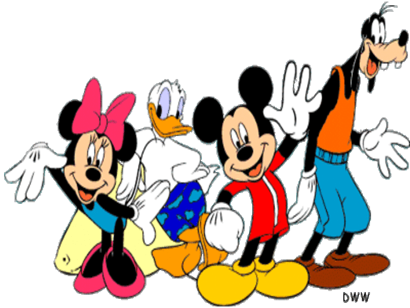
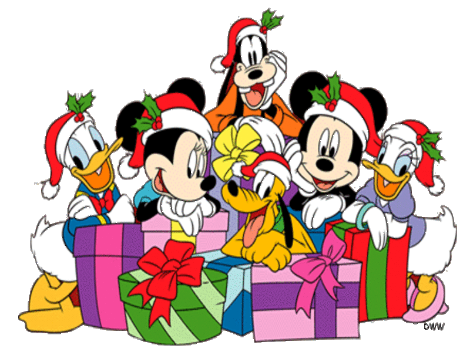

Sobre
Desde pequena sou apaixonada pela pelo mundo da Disney! Apesar de ainda não ter tido a oportunidade de viajar para conhecer os parques, cada filme que assisto é como se eu estivesse lá, vivendo esse sonho que a grande parte das pessoas tem. A cada filme é uma imersão diferente no que está sendo contado; é uma pequena experiência que me enche cada vez mais. Diante de toda essa paixão e de um trabalho para o curso que faço no momento, quis fazer essa página contando um pouquinho sobre cada personagem que compõe este mundo tão fascinante e que deixa qualquer um apaixonado!
Mickey Mouse
Mickey Mouse foi criado em 18 de novembro de 1928, no curta animado mudo Plane Crazy. Inicialmente batizado de Mortimer, o personagem teve seu nome alterado para Mickey Mouse por sugestão de Lillian Bounds, esposa de Walt Disney, que considerava o primeiro nome formal demais para o personagem. Inicialmente, Mickey bebia e fumava, mas a popularidade que ganhou em pouco tempo foi tão grande que Walt Disney resolveu torná-lo politicamente correto já em 1930. Na banda desenhada (no Brasil, histórias em quadrinhos) atual, os seus melhores amigos são Pluto e Pateta e a sua namorada é Minnie. Mickey surge em calções vermelhos e sapatos amarelos, uma homenagem que seu criador, Walt Disney, fez à Ordem DeMolay, da qual era membro. Em outras linhas de histórias, são abordados variadíssimos temas; numa delas, Mickey é um detetive, e veste casaco e todo o traje costumeiro. Um dos temas mais conhecidos é o duelo constante com o inimigo Bafo de Onça e, noutro tema, também enfrenta o Mancha Negra.
Minnie Mouse
Minerva "Minnie" Mouse é uma personagem do mundo fictício de Disney. Pertence ao Universo de Mickey, seu namorado. Criada em 1928 por Walt Disney. Esteve com Mickey desde o começo. E ela faz tudo pelo seu namorado Mickey. No primeiro desenho animado do camundongo famoso, Steamboat Willie (1928), depois de Bafo de Onça (Pete, no original em inglês) discute com Mickey na ponte sobre o barco fluvial de que era empregado, avista-se Minnie no cais, quase perdendo o barco pelo qual esperava. Mickey consegue "pescar" Minnie com um gancho e trazê-la para bordo. Depois, no deque, eles saltitam com a carga de animais de granja, usando-os como instrumentos musicais e com os quais improvisam a canção "Turkey in the Straw". Minnie é também amiga de Clarabela e Margarida.Sua primeira história em quadrinho foi "Lost on a Desert Island", publicada em Janeiro de 1930, nos EUA. No Brasil esta história foi publicada na revista "Cinqüentenário Disney 1", de 1973, com o título "Mickey Contra os Canibais".
Pato Donald
O Pato Donald (em inglês: 'Donald Duck' ) é um personagem de desenhos animados e histórias em quadrinhos dos estúdios de Walt Disney, criado em 1934. Ele aparece em vários desenhos como antagonista antipático, principalmente naqueles em que aparece junto de Mickey Mouse ou de seus sobrinhos Huguinho, Zezinho e Luisinho. Ele é muito azarado e mal-humorado, sempre perdendo suas batalhas para Mickey e para seus sobrinhos, dando um motivo verdadeiro para Donald odiá-los. Angariando grande popularidade graças a comicidade dos desenhos animados, os Estúdios Disney foram obrigados a mudar de estilo com a entrada dos Estados Unidos na II Guerra Mundial em 1942. A produção de desenhos passou a integrar o esforço de guerra norte-americano, abordando a guerra como tema. Em 1942, foi feito um desenho de propaganda anti-nazista, chamado de "A Face do Führer". Esse desenho mostra Donald vivendo na Alemanha Nazista, onde ele é forçado a trabalhar em uma fábrica de produção em série de armamento bélico pesado e de fotografias produzidas em série do Führer Adolf Hitler.
Pateta
Pateta (em inglês, Goofy; originalmente Dippy Dawg) é um personagem de animação dos Estúdios Walt Disney criado em 1932. Ele é um cão antropomórfico de aparência magra, esguia, alta, e desengonçada. É conhecido pelo público por seu jeito atrapalhado, engraçado e bondoso e por seu chapéu singular. Seu nome seria um apelido, pois nos curtas dos anos 50 e 60 era chamado "George Geef" ou "G. G. Goof". Fontes atuais como o desenho A Turma do Pateta dão seu nome completo como Goofy Goof (em português, "Pateta Brincalhão"). Pateta possui um filho, Max, e os alter-egos super-heroicos Superpateta (paródia de Superman) e Jaime Scond (paródia de James Bond). É amigo próximo de Mickey Mouse e do Pato Donald, dois dos personagens mais característicos do universo Disney. A estreia do personagem foi em desenhos animados: começou em "Mickey's Revue" como Dippy Dawg; passou a ser retratado como um personagem mais novo em produções posteriores como no curta "The Whoopee Party". Ganhou produções dedicadas a partir de 1939. Dois curtas foram indicados ao Oscar: How to Play Football (1944) e Aquamania (1961).
Pluto
Pluto inicialmente, não era o mascote de Mickey, mas sim de sua namorada, Minnie. O cão, treinado para caça, era chamado inicialmente de Rover, mas a esposa de Walt Disney (este o criador da personagem) sugeriu uma mudança de nome, aproveitando a recém descoberta de Plutão. A personagem apareceu em mais de 50 episódios de desenhos da Disney, desde sua primeira aparição, em 1930, no cartoon "The Chain Gang". Pluto cativou adultos e crianças com sua personalidade quase humana, e mesmo que sua aparência tenha mudado desde os primeiros episódios, ele sempre salvou seu dono de perigos. Assim como acontece com outros personagens longevos, a origem de Pluto gera controvérsias. Alguns especialistas apontam 1930 como seu ano de criação, enquanto outros adotam 1931.
Galeria





